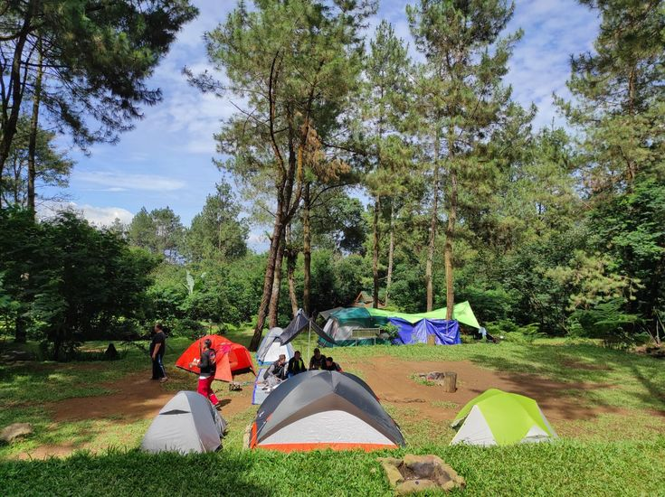
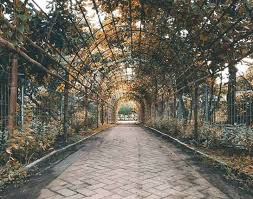
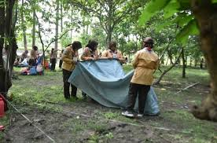
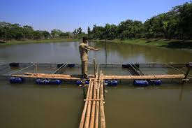
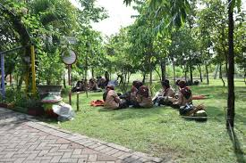
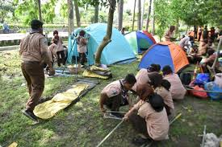

Kembali

Hutan Kota Balas Klumprik Surabaya adalah destinasi alam yang menyediakan berbagai fasilitas menarik, termasuk area pembibitan buah, camping ground, sepeda air, dan playground. Tempat ini menawarkan pengalaman edukatif dan rekreasi untuk semua kalangan.
Di sini, pengunjung dapat belajar tentang proses pembibitan berbagai jenis buah, menikmati suasana alam dengan berkemah di camping ground, serta bersantai sambil bermain di playground atau mengelilingi danau dengan sepeda air. Hutan kota ini menjadi pilihan tepat untuk rekreasi sekaligus edukasi di tengah kota Surabaya.
Jl. Balas Klumprik, Wiyung, Surabaya.Far far away, behind the word mountains, far from the countries Vokalia and Consonantia, there live the blind texts.
Far far away, behind the word mountains, far from the countries Vokalia and Consonantia, there live the blind texts.
Far far away, behind the word mountains, far from the countries Vokalia and Consonantia, there live the blind texts.
Far far away, behind the word mountains, far from the countries Vokalia and Consonantia, there live the blind texts.

Hutan Kota Balas Klumprik Surabaya adalah destinasi alam yang menyediakan berbagai fasilitas menarik, termasuk area pembibitan buah, camping ground, sepeda air, dan playground. Tempat ini menawarkan pengalaman edukatif dan rekreasi untuk semua kalangan.
Di sini, pengunjung dapat belajar tentang proses pembibitan berbagai jenis buah, menikmati suasana alam dengan berkemah di camping ground, serta bersantai sambil bermain di playground atau mengelilingi danau dengan sepeda air. Hutan kota ini menjadi pilihan tepat untuk rekreasi sekaligus edukasi di tengah kota Surabaya.
Ikuti langkah-langkah mudah berikut untuk memesan tiket Anda:
Tentukan tanggal dan waktu kunjungan yang Anda inginkan.
Masukkan informasi pribadi Anda untuk pemesanan tiket.
Konfirmasi pesanan Anda dan lakukan pembayaran melalui metode yang tersedia.





